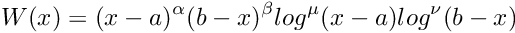
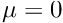
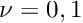
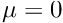
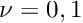
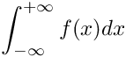
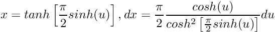

Namespaces | |
| detail | |
Enumerations | |
| enum | { NO_ERROR , MAX_ITER_ERROR , ROUNDOFF_ERROR , SINGULAR_ERROR , EXTRAP_ROUNDOFF_ERROR , DIVERGENCE_ERROR , MAX_SUBDIV_ERROR , TOLERANCE_ERROR , UNKNOWN_ERROR } |
| enum | Gauss_Legendre_Rule { GL_2 = 2 , GL_4 = 4 , GL_6 = 6 , GL_8 = 8 , GL_10 = 10 , GL_12 = 12 , GL_14 = 14 , GL_16 = 16 , GL_18 = 18 , GL_20 = 20 , GL_32 = 32 , GL_64 = 64 , GL_96 = 96 , GL_100 = 100 , GL_128 = 128 , GL_256 = 256 , GL_512 = 512 , GL_1024 = 1024 , GL_3 = 3 , GL_5 = 5 , GL_7 = 7 , GL_9 = 9 , GL_11 = 11 , GL_13 = 13 , GL_15 = 15 , GL_17 = 17 , GL_19 = 19 } |
Functions | |
| template<typename AreaTp , typename AbsAreaTp > | |
| void | check_error (std::string_view func, int errcode, AreaTp result, AbsAreaTp abserr) |
| template<typename Tp > | |
| std::vector< Tp > | compute_moments (std::size_t N, Tp cc) |
| template<typename Tp , typename RetTp > | |
| auto | compute_result (const std::array< Tp, 25 > &r, const std::array< RetTp, 13 > &cheb12, const std::array< RetTp, 25 > &cheb24) -> compute_result_t< decltype(Tp{} *RetTp{})> |
| template<typename Tp , typename FuncTp > | |
| auto | cquad_integrate (cquad_workspace< Tp, std::invoke_result_t< FuncTp, Tp >> &ws, FuncTp func, Tp a, Tp b, Tp epsabs, Tp epsrel) -> adaptive_integral_t< Tp, std::invoke_result_t< FuncTp, Tp >> |
| template<typename Tp > | |
| void | discrete_fourier_transform (bool do_forward, std::vector< std::complex< Tp >> &z) |
| template<typename Tp > | |
| void | downdate (Tp *coeff, std::ptrdiff_t n, std::ptrdiff_t depth, std::ptrdiff_t *NaN, std::ptrdiff_t num_NaNs) |
| template<typename CmplxIter > | |
| void | fast_fourier_transform (const CmplxIter &from, const CmplxIter &to) |
| template<typename Tp > | |
| void | fast_fourier_transform (std::vector< std::complex< Tp >> &z) |
| template<typename Tp > | |
| void | fast_fourier_transform (std::vector< Tp > &x) |
| template<typename Tp > | |
| void | fast_sine_transform (std::vector< Tp > &x) |
| template<typename Tp , typename FuncTp > | |
| auto | integrate (FuncTp func, Tp lower, Tp upper, Tp max_abs_error, Tp max_rel_error, std::size_t max_iter=1024, Kronrod_Rule qkintrule=Kronrod_21) -> adaptive_integral_t< Tp, std::invoke_result_t< FuncTp, Tp >> |
| template<typename Tp , typename FuncTp > | |
| auto | integrate_cauchy_principal_value (FuncTp func, Tp lower, Tp upper, Tp center, Tp max_abs_err, Tp max_rel_err, std::size_t max_iter=1024) -> adaptive_integral_t< Tp, std::invoke_result_t< FuncTp, Tp >> |
| template<typename Tp , typename FuncTp > | |
| auto | integrate_clenshaw_curtis (FuncTp func, Tp lower, Tp upper, Tp max_abs_error, Tp max_rel_error, std::size_t max_iter=1024) -> adaptive_integral_t< Tp, std::invoke_result_t< FuncTp, Tp >> |
| template<typename Tp , typename FuncTp > | |
| adaptive_integral_t< Tp, std::invoke_result_t< FuncTp, Tp > > | integrate_exp_sinh (FuncTp func, Tp lower, Tp max_abs_err, Tp max_rel_err, int max_iter) |
| template<typename Tp , typename FuncTp > | |
| fixed_integral_t< Tp, std::invoke_result_t< FuncTp, Tp > > | integrate_fixed_gauss_chebyshev_t (int n, FuncTp func, Tp lower, Tp upper) |
| template<typename Tp , typename FuncTp > | |
| fixed_integral_t< Tp, std::invoke_result_t< FuncTp, Tp > > | integrate_fixed_gauss_chebyshev_u (int n, FuncTp func, Tp lower, Tp upper) |
| template<typename Tp , typename FuncTp > | |
| fixed_integral_t< Tp, std::invoke_result_t< FuncTp, Tp > > | integrate_fixed_gauss_chebyshev_v (int n, FuncTp func, Tp lower, Tp upper) |
| template<typename Tp , typename FuncTp > | |
| fixed_integral_t< Tp, std::invoke_result_t< FuncTp, Tp > > | integrate_fixed_gauss_chebyshev_w (int n, FuncTp func, Tp lower, Tp upper) |
| template<typename Tp , typename FuncTp > | |
| fixed_integral_t< Tp, std::invoke_result_t< FuncTp, Tp > > | integrate_fixed_gauss_exponential (int n, Tp alf, FuncTp func, Tp lower, Tp upper) |
| template<typename Tp , typename FuncTp > | |
| fixed_integral_t< Tp, std::invoke_result_t< FuncTp, Tp > > | integrate_fixed_gauss_gegenbauer (int n, Tp lambda, FuncTp func, Tp lower, Tp upper) |
| template<typename Tp , typename FuncTp > | |
| fixed_integral_t< Tp, std::invoke_result_t< FuncTp, Tp > > | integrate_fixed_gauss_hermite (int n, Tp alf, FuncTp func, Tp lower, Tp upper) |
| template<typename Tp , typename FuncTp > | |
| fixed_integral_t< Tp, std::invoke_result_t< FuncTp, Tp > > | integrate_fixed_gauss_jacobi (int n, Tp alf, Tp bet, FuncTp func, Tp lower, Tp upper) |
| template<typename Tp , typename FuncTp > | |
| fixed_integral_t< Tp, std::invoke_result_t< FuncTp, Tp > > | integrate_fixed_gauss_laguerre (int n, Tp alf, FuncTp func, Tp lower, Tp upper) |
| template<typename Tp , typename FuncTp > | |
| fixed_integral_t< Tp, std::invoke_result_t< FuncTp, Tp > > | integrate_fixed_gauss_legendre (int n, FuncTp func, Tp lower, Tp upper) |
| template<typename Tp , typename FuncTp > | |
| fixed_integral_t< Tp, std::invoke_result_t< FuncTp, Tp > > | integrate_fixed_gauss_rational (int n, Tp alf, Tp bet, FuncTp func, Tp lower, Tp upper) |
| template<typename Tp , typename FuncTp > | |
| auto | integrate_kronrod_singular (FuncTp func, Tp lower, Tp upper, Tp max_abs_error, Tp max_rel_error, std::size_t max_iter=1024) -> adaptive_integral_t< Tp, std::invoke_result_t< FuncTp, Tp >> |
| template<typename Tp , typename FuncTp > | |
| auto | integrate_lower_minf (FuncTp func, Tp lower, Tp max_abs_error, Tp max_rel_error, std::size_t max_iter=1024, Kronrod_Rule qkintrule=Kronrod_21) -> adaptive_integral_t< Tp, std::invoke_result_t< FuncTp, Tp >> |
| template<typename Tp , typename FuncTp > | |
| auto | integrate_lower_pinf (FuncTp func, Tp lower, Tp max_abs_error, Tp max_rel_error, std::size_t max_iter=1024, Kronrod_Rule qkintrule=Kronrod_21) -> adaptive_integral_t< Tp, std::invoke_result_t< FuncTp, Tp >> |
| template<typename Tp , typename FuncTp > | |
| adaptive_integral_t< Tp, std::invoke_result_t< FuncTp, Tp > > | integrate_midpoint (FuncTp func, Tp a, Tp b, Tp max_abs_err, Tp max_rel_err, int max_iter) |
| template<typename Tp , typename FuncTp > | |
| auto | integrate_minf_pinf (FuncTp func, Tp max_abs_error, Tp max_rel_error, std::size_t max_iter=1024, Kronrod_Rule qkintrule=Kronrod_21) -> adaptive_integral_t< Tp, std::invoke_result_t< FuncTp, Tp >> |
| template<typename Tp , typename FuncTp > | |
| auto | integrate_minf_upper (FuncTp func, Tp upper, Tp max_abs_error, Tp max_rel_error, std::size_t max_iter=1024, Kronrod_Rule qkintrule=Kronrod_21) -> adaptive_integral_t< Tp, std::invoke_result_t< FuncTp, Tp >> |
| template<typename FuncTp , typename FwdIter , typename Tp > | |
| auto | integrate_multisingular (FuncTp func, FwdIter ptbeg, FwdIter ptend, Tp max_abs_error, Tp max_rel_error, std::size_t max_iter=1024) -> adaptive_integral_t< Tp, std::invoke_result_t< FuncTp, Tp >> |
| template<typename Tp , typename FuncTp > | |
| auto | integrate_oscillatory (FuncTp func, Tp lower, Tp upper, Tp max_abs_error, Tp max_rel_error, std::size_t max_iter=1024) -> adaptive_integral_t< Tp, std::invoke_result_t< FuncTp, Tp >> |
| template<typename Tp , typename FuncTp > | |
| auto | integrate_patterson (FuncTp func, Tp lower, Tp upper, Tp max_abs_error, Tp max_rel_error) -> adaptive_integral_t< Tp, std::invoke_result_t< FuncTp, Tp >> |
| template<typename Tp , typename FuncTp > | |
| auto | integrate_pinf_upper (FuncTp func, Tp upper, Tp max_abs_error, Tp max_rel_error, std::size_t max_iter=1024, Kronrod_Rule qkintrule=Kronrod_21) -> adaptive_integral_t< Tp, std::invoke_result_t< FuncTp, Tp >> |
| template<typename Tp , typename FuncTp > | |
| adaptive_integral_t< Tp, std::invoke_result_t< FuncTp, Tp > > | integrate_simpson (FuncTp __func, Tp __a, Tp __b, Tp __max_abs_err, Tp __max_rel_err, int __max_iter) |
| template<typename Tp , typename FuncTp > | |
| auto | integrate_singular (FuncTp func, Tp lower, Tp upper, Tp max_abs_error, Tp max_rel_error, std::size_t max_iter=1024) -> adaptive_integral_t< Tp, std::invoke_result_t< FuncTp, Tp >> |
| template<typename Tp , typename FuncTp > | |
| auto | integrate_singular_endpoints (FuncTp func, Tp lower, Tp upper, Tp alpha, Tp beta, int mu, int nu, Tp max_abs_error, Tp max_rel_error, std::size_t max_iter=1024) -> adaptive_integral_t< Tp, std::invoke_result_t< FuncTp, Tp >> |
| template<typename Tp , typename FuncTp > | |
| auto | integrate_singular_lower_minf (FuncTp func, Tp lower, Tp max_abs_error, Tp max_rel_error, std::size_t max_iter=1024) -> adaptive_integral_t< Tp, std::invoke_result_t< FuncTp, Tp >> |
| template<typename Tp , typename FuncTp > | |
| auto | integrate_singular_lower_pinf (FuncTp func, Tp lower, Tp max_abs_error, Tp max_rel_error, std::size_t max_iter=1024) -> adaptive_integral_t< Tp, std::invoke_result_t< FuncTp, Tp >> |
| template<typename Tp , typename FuncTp > | |
| auto | integrate_singular_minf_pinf (FuncTp func, Tp max_abs_error, Tp max_rel_error, std::size_t max_iter=1024) -> adaptive_integral_t< Tp, std::invoke_result_t< FuncTp, Tp >> |
| template<typename Tp , typename FuncTp > | |
| auto | integrate_singular_minf_upper (FuncTp func, Tp upper, Tp max_abs_error, Tp max_rel_error, std::size_t max_iter=1024) -> adaptive_integral_t< Tp, std::invoke_result_t< FuncTp, Tp >> |
| template<typename Tp , typename FuncTp > | |
| auto | integrate_singular_pinf_upper (FuncTp func, Tp upper, Tp max_abs_error, Tp max_rel_error, std::size_t max_iter=1024) -> adaptive_integral_t< Tp, std::invoke_result_t< FuncTp, Tp >> |
| template<typename Tp , typename FuncTp > | |
| adaptive_integral_t< Tp, std::invoke_result_t< FuncTp, Tp > > | integrate_sinh_sinh (FuncTp func, Tp max_abs_err, Tp max_rel_err, int max_iter) |
| template<typename Tp , typename FuncTp > | |
| adaptive_integral_t< Tp, std::invoke_result_t< FuncTp, Tp > > | integrate_tanh_sinh (FuncTp func, Tp lower, Tp upper, Tp max_abs_err, Tp max_rel_err, int max_iter) |
| template<typename Tp , typename FuncTp > | |
| adaptive_integral_t< Tp, std::invoke_result_t< FuncTp, Tp > > | integrate_trapezoid (FuncTp func, Tp a, Tp b, Tp max_abs_err, Tp max_rel_err, int max_iter) |
| template<typename CmplxIter > | |
| void | inv_fast_fourier_transform (const CmplxIter &from, const CmplxIter &to) |
| template<typename Tp > | |
| void | inv_fast_fourier_transform (std::vector< std::complex< Tp >> &z) |
| template<typename Tp > | |
| void | inv_fast_fourier_transform (std::vector< Tp > &x) |
| template<typename Tp > | |
| void | inv_fast_sine_transform (std::vector< Tp > &x) |
| template<typename Tp , typename RetTp > | |
| bool | operator< (const cquad_interval< Tp, RetTp > &ivl, const cquad_interval< Tp, RetTp > &ivr) |
| template<typename Tp , typename RetTp > | |
| std::ostream & | operator<< (std::ostream &out, const integration_workspace< Tp, RetTp > &ws) |
| template<typename Tp , typename FuncTp , typename Integrator = gauss_kronrod_integral<Tp>> | |
| auto | qag_integrate (integration_workspace< Tp, std::invoke_result_t< FuncTp, Tp >> &workspace, FuncTp func, Tp lower, Tp upper, Tp max_abs_err, Tp max_rel_err, Integrator quad=gauss_kronrod_integral< Tp >(Kronrod_21)) -> adaptive_integral_t< Tp, std::invoke_result_t< FuncTp, Tp >> |
| template<typename Tp , typename FuncTp > | |
| auto | qagi_integrate (integration_workspace< Tp, std::invoke_result_t< FuncTp, Tp >> &workspace, FuncTp func, Tp max_abs_err, Tp max_rel_err) -> adaptive_integral_t< Tp, decltype(map_minf_pinf< Tp, FuncTp >(func)(Tp{}))> |
| template<typename Tp , typename FuncTp > | |
| auto | qagil_integrate (integration_workspace< Tp, std::invoke_result_t< FuncTp, Tp >> &workspace, FuncTp func, Tp upper, Tp max_abs_err, Tp max_rel_err) -> adaptive_integral_t< Tp, decltype(map_minf_b< Tp, FuncTp >(func, upper)(Tp{}))> |
| template<typename Tp , typename FuncTp > | |
| auto | qagis_integrate (integration_workspace< Tp, std::invoke_result_t< FuncTp, Tp >> &workspace, FuncTp func, Tp max_abs_err, Tp max_rel_err) -> adaptive_integral_t< Tp, decltype(map_minf_pinf_symm< Tp, FuncTp >(func)(Tp{}))> |
| template<typename Tp , typename FuncTp > | |
| auto | qagiu_integrate (integration_workspace< Tp, std::invoke_result_t< FuncTp, Tp >> &workspace, FuncTp func, Tp lower, Tp max_abs_err, Tp max_rel_err) -> adaptive_integral_t< Tp, decltype(map_a_pinf< Tp, FuncTp >(func, lower)(Tp{}))> |
| template<typename Tp , typename FuncTp , typename Integrator = gauss_kronrod_integral<Tp>> | |
| auto | qagp_integrate (integration_workspace< Tp, std::invoke_result_t< FuncTp, Tp >> &workspace, FuncTp func, std::vector< Tp > pts, Tp max_abs_err, Tp max_rel_err, Integrator quad=gauss_kronrod_integral< Tp >(Kronrod_21)) -> adaptive_integral_t< Tp, std::invoke_result_t< FuncTp, Tp >> |
| template<typename Tp , typename FuncTp , typename Integrator = gauss_kronrod_integral<Tp>> | |
| auto | qags_integrate (integration_workspace< Tp, std::invoke_result_t< FuncTp, Tp >> &workspace, FuncTp func, Tp lower, Tp upper, Tp max_abs_err, Tp max_rel_err, Integrator quad=gauss_kronrod_integral< Tp >(Kronrod_15)) -> adaptive_integral_t< Tp, std::invoke_result_t< FuncTp, Tp >> |
| template<typename Tp , typename FuncTp , typename Integrator = gauss_kronrod_integral<Tp>> | |
| auto | qawc_integrate (integration_workspace< Tp, std::invoke_result_t< FuncTp, Tp >> &workspace, FuncTp func, Tp lower, Tp upper, Tp center, Tp max_abs_err, Tp max_rel_err, Integrator quad=gauss_kronrod_integral< Tp >(Kronrod_15)) -> adaptive_integral_t< Tp, std::invoke_result_t< FuncTp, Tp >> |
| template<typename Tp , typename FuncTp > | |
| auto | qawf_integrate (integration_workspace< Tp, std::invoke_result_t< FuncTp, Tp >> &workspace, integration_workspace< Tp, std::invoke_result_t< FuncTp, Tp >> &cycle_workspace, oscillatory_integration_table< Tp > &wf, FuncTp func, Tp lower, Tp max_abs_err) -> adaptive_integral_t< Tp, std::invoke_result_t< FuncTp, Tp >> |
| template<typename Tp , typename FuncTp > | |
| auto | qawo_integrate (integration_workspace< Tp, std::invoke_result_t< FuncTp, Tp >> &workspace, oscillatory_integration_table< Tp > &wf, FuncTp func, const Tp lower, const Tp max_abs_err, const Tp max_rel_err) -> adaptive_integral_t< Tp, std::invoke_result_t< FuncTp, Tp >> |
| template<typename Tp , typename FuncTp , typename Integrator = gauss_kronrod_integral<Tp>> | |
| auto | qaws_integrate (integration_workspace< Tp, std::invoke_result_t< FuncTp, Tp >> &workspace, qaws_integration_table< Tp > &table, FuncTp func, Tp lower, Tp upper, Tp max_abs_err, Tp max_rel_err, Integrator quad=gauss_kronrod_integral< Tp >(Kronrod_15)) -> adaptive_integral_t< Tp, std::invoke_result_t< FuncTp, Tp >> |
| template<typename Tp , typename FuncTp , typename Integrator = gauss_kronrod_integral<Tp>> | |
| auto | qc25c (FuncTp func, Tp lower, Tp upper, Tp center, Integrator quad=gauss_kronrod_integral< Tp >(Kronrod_15)) -> std::tuple< decltype(Tp{} *func(Tp{})), Tp, bool > |
| template<typename Tp , typename FuncTp > | |
| auto | qc25f (oscillatory_integration_table< Tp > &wf, FuncTp func, Tp lower, Tp upper, std::size_t depth) -> gauss_kronrod_integral_t< Tp, std::invoke_result_t< FuncTp, Tp >> |
| template<typename Tp , typename FuncTp , typename Integrator = gauss_kronrod_integral<Tp>> | |
| std::tuple< Tp, Tp, bool > | qc25s (qaws_integration_table< Tp > &t, FuncTp func, Tp lower, Tp upper, Tp a1, Tp mid, Integrator quad=gauss_kronrod_integral< Tp >(Kronrod_15)) |
| template<typename Tp , typename FuncTp > | |
| auto | qcheb_integrate (FuncTp func, Tp lower, Tp upper) -> chebyshev_integral_t< std::invoke_result_t< FuncTp, Tp >> |
| template<typename Tp , typename FuncTp > | |
| auto | qk_integrate (FuncTp func, Tp lower, Tp upper, Kronrod_Rule qkintrule) -> gauss_kronrod_integral_t< Tp, std::invoke_result_t< FuncTp, Tp >> |
| template<typename Tp , typename FuncTp > | |
| auto | qng_integrate (FuncTp func, Tp lower, Tp upper, Tp max_abs_err, Tp max_rel_err) -> gauss_kronrod_integral_t< Tp, std::invoke_result_t< FuncTp, Tp >> |
| template<typename AreaTp , typename AbsAreaTp > | |
| AbsAreaTp | rescale_error (AreaTp err, const AbsAreaTp result_abs, const AbsAreaTp result_asc) |
| template<typename RandAccIter , typename RandAccIterRHS > | |
| int | s_tridiag (size_t n, RandAccIter supd, RandAccIter diag, RandAccIter subd, RandAccIterRHS rhs) |
| template<typename RandAccIter , typename RandAccIterRHS > | |
| int | s_tridiag (std::size_t n, RandAccIter supd, RandAccIter diag, RandAccIter subd, RandAccIterRHS rhs) |
| template<typename RandAccIter , typename RandAccIterRHS > | |
| int | s_tridiag_symm (std::size_t n, RandAccIter &diag, RandAccIter &subd, RandAccIterRHS &rhs) |
| Diagonalize a symmetric tridiagonal matrix. More... | |
| template<typename AreaTp , typename AbsAreaTp > | |
| bool | test_positivity (AreaTp result, AbsAreaTp resabs) |
| template<typename Tp > | |
| bool | valid_tolerances (Tp max_abs_err, Tp max_rel_err) |
| template<typename RetTp > | |
| void | Vinvfx (const std::array< RetTp, 33 > &fx, RetTp *coeff, const int depth) |
| template<typename Tp , typename FuncTp > | |
| std::invoke_result_t< FuncTp, Tp > | wrap_func (FuncTp func, Tp x) |
Variables | |
| constexpr long double | bee [68] |
| template<typename Tp , typename Func > | |
| decltype(std::invoke_result_t< Func, Tp >{} *Tp{} | gauss_hermite_integrate )(Func func, unsigned int n) |
| template<typename Tp , typename Func > | |
| decltype(std::invoke_result_t< Func, Tp >{} *Tp{} | gauss_laguerre_integrate )(Func func, unsigned int n, Tp alpha) |
| const gauss_legendre_table< long double > | gauss_legendre_precomp [] |
| template<typename Tp , typename FuncTp > | |
| decltype(std::invoke_result_t< FuncTp, Tp >{} *Tp{} | glfixed_integrate )(const gauss_legendre_table< Tp > &t, FuncTp func, Tp lower, Tp upper) |
| constexpr long double | Lalpha [33] |
| constexpr long double | Lgamma [33] |
| const std::size_t | num_gauss_legendre_precomp |
| constexpr long double | Tleft [33 *33] |
| constexpr long double | Tright [33 *33] |
| constexpr long double | V1inv [5 *5] |
| constexpr long double | V2inv [9 *9] |
| constexpr long double | V3inv [17 *17] |
| constexpr long double | V4inv [33 *33] |
| constexpr long double | w10 [5] |
| constexpr long double | w100 [50] |
| constexpr long double | w1024 [512] |
| constexpr long double | w11 [6] |
| constexpr long double | w12 [6] |
| constexpr long double | w128 [64] |
| constexpr long double | w13 [7] |
| constexpr long double | w14 [7] |
| constexpr long double | w15 [8] |
| constexpr long double | w16 [8] |
| constexpr long double | w17 [9] |
| constexpr long double | w18 [9] |
| constexpr long double | w19 [10] |
| constexpr long double | w2 [1] |
| constexpr long double | w20 [10] |
| constexpr long double | w256 [128] |
| constexpr long double | w3 [2] |
| constexpr long double | w32 [16] |
| constexpr long double | w4 [2] |
| constexpr long double | w5 [3] |
| constexpr long double | w512 [256] |
| constexpr long double | w6 [3] |
| constexpr long double | w64 [32] |
| constexpr long double | w7 [4] |
| constexpr long double | w8 [4] |
| constexpr long double | w9 [5] |
| constexpr long double | w96 [48] |
| constexpr long double | x10 [5] |
| constexpr long double | x100 [50] |
| constexpr long double | x1024 [512] |
| constexpr long double | x11 [6] |
| constexpr long double | x12 [6] |
| constexpr long double | x128 [64] |
| constexpr long double | x13 [7] |
| constexpr long double | x14 [7] |
| constexpr long double | x15 [8] |
| constexpr long double | x16 [8] |
| constexpr long double | x17 [9] |
| constexpr long double | x18 [9] |
| constexpr long double | x19 [10] |
| constexpr long double | x2 [1] |
| constexpr long double | x20 [10] |
| constexpr long double | x256 [128] |
| constexpr long double | x3 [2] |
| constexpr long double | x32 [16] |
| constexpr long double | x4 [2] |
| constexpr long double | x5 [3] |
| constexpr long double | x512 [256] |
| constexpr long double | x6 [3] |
| constexpr long double | x64 [32] |
| constexpr long double | x7 [4] |
| constexpr long double | x8 [4] |
| constexpr long double | x9 [5] |
| constexpr long double | x96 [48] |
| constexpr long double | xi [33] |
Detailed Description
Gauss-Kronrod-Patterson quadrature coefficients for use in QUADPACK routine QNG. These coefficients were calculated with 101 decimal digit arithmetic by L. W. Fullerton, Bell Labs, Nov 1981.
Enumeration Type Documentation
◆ anonymous enum
| anonymous enum |
| Enumerator | |
|---|---|
| NO_ERROR | |
| MAX_ITER_ERROR | |
| ROUNDOFF_ERROR | |
| SINGULAR_ERROR | |
| EXTRAP_ROUNDOFF_ERROR | |
| DIVERGENCE_ERROR | |
| MAX_SUBDIV_ERROR | |
| TOLERANCE_ERROR | |
| UNKNOWN_ERROR | |
Definition at line 33 of file integration_error.h.
◆ Gauss_Legendre_Rule
| Enumerator | |
|---|---|
| GL_2 | |
| GL_4 | |
| GL_6 | |
| GL_8 | |
| GL_10 | |
| GL_12 | |
| GL_14 | |
| GL_16 | |
| GL_18 | |
| GL_20 | |
| GL_32 | |
| GL_64 | |
| GL_96 | |
| GL_100 | |
| GL_128 | |
| GL_256 | |
| GL_512 | |
| GL_1024 | |
| GL_3 | |
| GL_5 | |
| GL_7 | |
| GL_9 | |
| GL_11 | |
| GL_13 | |
| GL_15 | |
| GL_17 | |
| GL_19 | |
Definition at line 32 of file gauss_legendre_table.h.
Function Documentation
◆ check_error()
| void emsr::check_error | ( | std::string_view | func, |
| int | errcode, | ||
| AreaTp | result, | ||
| AbsAreaTp | abserr | ||
| ) |
Throws appropriate error if errcode nonzero
Definition at line 81 of file integration_error.h.
References DIVERGENCE_ERROR, EXTRAP_ROUNDOFF_ERROR, MAX_ITER_ERROR, MAX_SUBDIV_ERROR, NO_ERROR, ROUNDOFF_ERROR, SINGULAR_ERROR, and TOLERANCE_ERROR.
◆ compute_moments()
Compute Clenshaw-Curtis moments. An iterator range version would be nicer I think.
Definition at line 273 of file qawc_integrate.tcc.
◆ compute_result()
| auto emsr::compute_result | ( | const std::array< Tp, 25 > & | r, |
| const std::array< RetTp, 13 > & | cheb12, | ||
| const std::array< RetTp, 25 > & | cheb24 | ||
| ) | -> compute_result_t<decltype(Tp{} * RetTp{})> |
Definition at line 403 of file qaws_integrate.tcc.
◆ cquad_integrate()
| auto emsr::cquad_integrate | ( | cquad_workspace< Tp, std::invoke_result_t< FuncTp, Tp >> & | ws, |
| FuncTp | func, | ||
| Tp | a, | ||
| Tp | b, | ||
| Tp | epsabs, | ||
| Tp | epsrel | ||
| ) | -> adaptive_integral_t<Tp, std::invoke_result_t<FuncTp, Tp>> |
CQUAD is a new doubly-adaptive general-purpose quadrature routine which can handle most types of singularities, non-numerical function values such as Inf or NaN, as well as some divergent integrals. It generally requires more function evaluations than the other integration routines in this library, yet fails less often for difficult integrands.
The underlying algorithm uses a doubly-adaptive scheme in which Clenshaw-Curtis quadrature rules of increasing degree are used to compute the integral in each interval. The L_2-norm of the difference between the underlying interpolatory polynomials of two successive rules is used as an error estimate. The interval is subdivided if the difference between two successive rules is too large or a rule of maximum degree has been reached.
The CQUAD algorithm divides the integration region into subintervals, and in each iteration, the subinterval with the largest estimated error is processed. The algorithm uses Clenshaw-Curtis quadrature rules of degree 4, 8, 16 and 32 over 5, 9, 17 and 33 nodes respectively. Each interval is initialized with the lowest-degree rule. When an interval is processed, the next-higher degree rule is evaluated and an error estimate is computed based on the L_2-norm of the difference between the underlying interpolating polynomials of both rules. If the highest-degree rule has already been used, or the interpolatory polynomials differ significantly, the interval is bisected.
Definition at line 150 of file cquad_integrate.tcc.
◆ discrete_fourier_transform()
| void emsr::discrete_fourier_transform | ( | bool | do_forward, |
| std::vector< std::complex< Tp >> & | z | ||
| ) |
◆ downdate()
| void emsr::downdate | ( | Tp * | coeff, |
| std::ptrdiff_t | n, | ||
| std::ptrdiff_t | depth, | ||
| std::ptrdiff_t * | NaN, | ||
| std::ptrdiff_t | num_NaNs | ||
| ) |
Downdate the interpolation given by the n coefficients c by removing the nodes with indices in NaNs.
Definition at line 94 of file cquad_integrate.tcc.
◆ fast_fourier_transform() [1/3]
| void emsr::fast_fourier_transform | ( | const CmplxIter & | from, |
| const CmplxIter & | to | ||
| ) |
Fast Fourier Transform on input range.
Definition at line 258 of file fourier_transform.tcc.
◆ fast_fourier_transform() [2/3]
| void emsr::fast_fourier_transform | ( | std::vector< std::complex< Tp >> & | z | ) |
Fast Fourier Transform on complex data.
Definition at line 69 of file fourier_transform.tcc.
◆ fast_fourier_transform() [3/3]
| void emsr::fast_fourier_transform | ( | std::vector< Tp > & | x | ) |
◆ fast_sine_transform()
| void emsr::fast_sine_transform | ( | std::vector< Tp > & | x | ) |
◆ integrate()
| auto emsr::integrate | ( | FuncTp | func, |
| Tp | lower, | ||
| Tp | upper, | ||
| Tp | max_abs_error, | ||
| Tp | max_rel_error, | ||
| std::size_t | max_iter = 1024, |
||
| Kronrod_Rule | qkintrule = Kronrod_21 |
||
| ) | -> adaptive_integral_t< Tp, std::invoke_result_t< FuncTp, Tp >> |
Integrate a smooth function from a to b.
Higher-order rules converge more rapidly for most functions, but may slow convergence for less well-behaved ones.
- Parameters
-
func The function to be integrated. lower The lower limit of integration. upper The upper limit of integration. max_abs_error The absolute error limit. max_rel_error The relative error limit. max_iter is the maximum number of iterations allowed qkintrule is the Gauss-Kronrod integration rule.
- Returns
- A structure containing the integration result and the error.
◆ integrate_cauchy_principal_value()
| auto emsr::integrate_cauchy_principal_value | ( | FuncTp | func, |
| Tp | lower, | ||
| Tp | upper, | ||
| Tp | center, | ||
| Tp | max_abs_err, | ||
| Tp | max_rel_err, | ||
| std::size_t | max_iter = 1024 |
||
| ) | -> adaptive_integral_t< Tp, std::invoke_result_t< FuncTp, Tp >> |
Integrate the principal value of a function with a Cauchy singularity.
◆ integrate_clenshaw_curtis()
| auto emsr::integrate_clenshaw_curtis | ( | FuncTp | func, |
| Tp | lower, | ||
| Tp | upper, | ||
| Tp | max_abs_error, | ||
| Tp | max_rel_error, | ||
| std::size_t | max_iter = 1024 |
||
| ) | -> adaptive_integral_t< Tp, std::invoke_result_t< FuncTp, Tp >> |
Integrate a function using an adaptive Clenshaw-Curtis algorithm.
- Template Parameters
-
FuncTp A function type that takes a single real scalar argument and returns a real scalar. Tp A real type for the limits of integration and the step.
◆ integrate_exp_sinh()
| adaptive_integral_t< Tp, std::invoke_result_t< FuncTp, Tp > > emsr::integrate_exp_sinh | ( | FuncTp | func, |
| Tp | lower, | ||
| Tp | max_abs_err, | ||
| Tp | max_rel_err, | ||
| int | max_iter | ||
| ) |
![\[ \int_{0}^{+\infty}f(x)dx \]](form_6.png)
Making the change of variables:
![\[ x = exp\left[\frac{\pi}{2}sinh(u)\right], dx = \frac{\pi}{2} cosh(u) exp\left[\frac{\pi}{2}sinh(u)\right]du \]](form_7.png)
gives the following integral:
![\[ \int_{0}^{+\infty}f(exp\left[\frac{\pi}{2}sinh(u)\right]) = \sum_{k=-n}^{+n} \]](form_8.png)
This function allows a non-zero lower limit a.
- Parameters
-
func The function to be integrated. a The lower limit of the semi-infinite integral.
Definition at line 261 of file double_exp_integrate.tcc.
◆ integrate_fixed_gauss_chebyshev_t()
| fixed_integral_t< Tp, std::invoke_result_t< FuncTp, Tp > > emsr::integrate_fixed_gauss_chebyshev_t | ( | int | n, |
| FuncTp | func, | ||
| Tp | lower, | ||
| Tp | upper | ||
| ) |
Definition at line 274 of file gauss_quadrature.h.
◆ integrate_fixed_gauss_chebyshev_u()
| fixed_integral_t< Tp, std::invoke_result_t< FuncTp, Tp > > emsr::integrate_fixed_gauss_chebyshev_u | ( | int | n, |
| FuncTp | func, | ||
| Tp | lower, | ||
| Tp | upper | ||
| ) |
Definition at line 298 of file gauss_quadrature.h.
◆ integrate_fixed_gauss_chebyshev_v()
| fixed_integral_t< Tp, std::invoke_result_t< FuncTp, Tp > > emsr::integrate_fixed_gauss_chebyshev_v | ( | int | n, |
| FuncTp | func, | ||
| Tp | lower, | ||
| Tp | upper | ||
| ) |
Definition at line 321 of file gauss_quadrature.h.
◆ integrate_fixed_gauss_chebyshev_w()
| fixed_integral_t< Tp, std::invoke_result_t< FuncTp, Tp > > emsr::integrate_fixed_gauss_chebyshev_w | ( | int | n, |
| FuncTp | func, | ||
| Tp | lower, | ||
| Tp | upper | ||
| ) |
Definition at line 344 of file gauss_quadrature.h.
◆ integrate_fixed_gauss_exponential()
| fixed_integral_t< Tp, std::invoke_result_t< FuncTp, Tp > > emsr::integrate_fixed_gauss_exponential | ( | int | n, |
| Tp | alf, | ||
| FuncTp | func, | ||
| Tp | lower, | ||
| Tp | upper | ||
| ) |
Definition at line 460 of file gauss_quadrature.h.
◆ integrate_fixed_gauss_gegenbauer()
| fixed_integral_t< Tp, std::invoke_result_t< FuncTp, Tp > > emsr::integrate_fixed_gauss_gegenbauer | ( | int | n, |
| Tp | lambda, | ||
| FuncTp | func, | ||
| Tp | lower, | ||
| Tp | upper | ||
| ) |
Definition at line 367 of file gauss_quadrature.h.
◆ integrate_fixed_gauss_hermite()
| fixed_integral_t< Tp, std::invoke_result_t< FuncTp, Tp > > emsr::integrate_fixed_gauss_hermite | ( | int | n, |
| Tp | alf, | ||
| FuncTp | func, | ||
| Tp | lower, | ||
| Tp | upper | ||
| ) |
Definition at line 437 of file gauss_quadrature.h.
◆ integrate_fixed_gauss_jacobi()
| fixed_integral_t< Tp, std::invoke_result_t< FuncTp, Tp > > emsr::integrate_fixed_gauss_jacobi | ( | int | n, |
| Tp | alf, | ||
| Tp | bet, | ||
| FuncTp | func, | ||
| Tp | lower, | ||
| Tp | upper | ||
| ) |
Definition at line 390 of file gauss_quadrature.h.
◆ integrate_fixed_gauss_laguerre()
| fixed_integral_t< Tp, std::invoke_result_t< FuncTp, Tp > > emsr::integrate_fixed_gauss_laguerre | ( | int | n, |
| Tp | alf, | ||
| FuncTp | func, | ||
| Tp | lower, | ||
| Tp | upper | ||
| ) |
Definition at line 414 of file gauss_quadrature.h.
◆ integrate_fixed_gauss_legendre()
| fixed_integral_t< Tp, std::invoke_result_t< FuncTp, Tp > > emsr::integrate_fixed_gauss_legendre | ( | int | n, |
| FuncTp | func, | ||
| Tp | lower, | ||
| Tp | upper | ||
| ) |
Definition at line 251 of file gauss_quadrature.h.
◆ integrate_fixed_gauss_rational()
| fixed_integral_t< Tp, std::invoke_result_t< FuncTp, Tp > > emsr::integrate_fixed_gauss_rational | ( | int | n, |
| Tp | alf, | ||
| Tp | bet, | ||
| FuncTp | func, | ||
| Tp | lower, | ||
| Tp | upper | ||
| ) |
Definition at line 483 of file gauss_quadrature.h.
◆ integrate_kronrod_singular()
| auto emsr::integrate_kronrod_singular | ( | FuncTp | func, |
| Tp | lower, | ||
| Tp | upper, | ||
| Tp | max_abs_error, | ||
| Tp | max_rel_error, | ||
| std::size_t | max_iter = 1024 |
||
| ) | -> adaptive_integral_t< Tp, std::invoke_result_t< FuncTp, Tp >> |
Adaptive Gauss-Kronrod integration optimized for discontinuous or singular functions
- Parameters
-
func The function to be integrated. lower The lower limit of integration. upper The upper limit of integration. max_abs_error The absolute error limit. max_rel_error The relative error limit. max_iter is the maximum number of iterations allowed
- Returns
- A structure containing the integration result and the error.
◆ integrate_lower_minf()
|
inline |
Definition at line 219 of file integration.h.
◆ integrate_lower_pinf()
| auto emsr::integrate_lower_pinf | ( | FuncTp | func, |
| Tp | lower, | ||
| Tp | max_abs_error, | ||
| Tp | max_rel_error, | ||
| std::size_t | max_iter = 1024, |
||
| Kronrod_Rule | qkintrule = Kronrod_21 |
||
| ) | -> adaptive_integral_t< Tp, std::invoke_result_t< FuncTp, Tp >> |
Integrate a smooth function from finite lower limit to +infinity.
- Parameters
-
func The function to be integrated. upper The upper limit of integration. max_abs_error The absolute error limit. max_rel_error The relative error limit. max_iter is the maximum number of iterations allowed qkintrule is the Gauss-Kronrod integration rule.
- Returns
- A structure containing the integration result and the error.
◆ integrate_midpoint()
|
inline |
Definition at line 128 of file midpoint_integral.h.
◆ integrate_minf_pinf()
| auto emsr::integrate_minf_pinf | ( | FuncTp | func, |
| Tp | max_abs_error, | ||
| Tp | max_rel_error, | ||
| std::size_t | max_iter = 1024, |
||
| Kronrod_Rule | qkintrule = Kronrod_21 |
||
| ) | -> adaptive_integral_t< Tp, std::invoke_result_t< FuncTp, Tp >> |
Integrates a smooth function from -infinity to +infinity.
- Parameters
-
func The function to be integrated. max_abs_error The absolute error limit. max_rel_error The relative error limit. max_iter is the maximum number of iterations allowed qkintrule is the Gauss-Kronrod integration rule.
- Returns
- A structure containing the integration result and the error.
◆ integrate_minf_upper()
| auto emsr::integrate_minf_upper | ( | FuncTp | func, |
| Tp | upper, | ||
| Tp | max_abs_error, | ||
| Tp | max_rel_error, | ||
| std::size_t | max_iter = 1024, |
||
| Kronrod_Rule | qkintrule = Kronrod_21 |
||
| ) | -> adaptive_integral_t< Tp, std::invoke_result_t< FuncTp, Tp >> |
Integrate a smooth function from -infinity to finite b.
- Parameters
-
func The function to be integrated. upper The upper limit of integration. max_abs_error The absolute error limit. max_rel_error The relative error limit. max_iter is the maximum number of iterations allowed qkintrule is the Gauss-Kronrod integration rule.
- Returns
- A structure containing the integration result and the error.
◆ integrate_multisingular()
| auto emsr::integrate_multisingular | ( | FuncTp | func, |
| FwdIter | ptbeg, | ||
| FwdIter | ptend, | ||
| Tp | max_abs_error, | ||
| Tp | max_rel_error, | ||
| std::size_t | max_iter = 1024 |
||
| ) | -> adaptive_integral_t< Tp, std::invoke_result_t< FuncTp, Tp >> |
Adaptively integrate a function with known singular/discontinuous points.
- Template Parameters
-
FuncTp A function type that takes a single real scalar argument and returns a real scalar. Tp A real type for the limits of integration and the step.
◆ integrate_oscillatory()
| auto emsr::integrate_oscillatory | ( | FuncTp | func, |
| Tp | lower, | ||
| Tp | upper, | ||
| Tp | max_abs_error, | ||
| Tp | max_rel_error, | ||
| std::size_t | max_iter = 1024 |
||
| ) | -> adaptive_integral_t< Tp, std::invoke_result_t< FuncTp, Tp >> |
Integrate an oscillatory function.
◆ integrate_patterson()
| auto emsr::integrate_patterson | ( | FuncTp | func, |
| Tp | lower, | ||
| Tp | upper, | ||
| Tp | max_abs_error, | ||
| Tp | max_rel_error | ||
| ) | -> adaptive_integral_t< Tp, std::invoke_result_t< FuncTp, Tp >> |
Adaptively integrate a function using a recursive Gauss-Kronrod quadrature called the Patterson algorithm.
◆ integrate_pinf_upper()
|
inline |
Definition at line 255 of file integration.h.
◆ integrate_simpson()
|
inline |
Definition at line 129 of file simpson_integral.h.
◆ integrate_singular()
| auto emsr::integrate_singular | ( | FuncTp | func, |
| Tp | lower, | ||
| Tp | upper, | ||
| Tp | max_abs_error, | ||
| Tp | max_rel_error, | ||
| std::size_t | max_iter = 1024 |
||
| ) | -> adaptive_integral_t< Tp, std::invoke_result_t< FuncTp, Tp >> |
Integrate a potentially singular function.
- Parameters
-
func The function to be integrated. lower The lower limit of integration. upper The upper limit of integration. max_abs_error The absolute error limit. max_rel_error The relative error limit. max_iter is the maximum number of iterations allowed
- Returns
- A structure containing the integration result and the error.
◆ integrate_singular_endpoints()
| auto emsr::integrate_singular_endpoints | ( | FuncTp | func, |
| Tp | lower, | ||
| Tp | upper, | ||
| Tp | alpha, | ||
| Tp | beta, | ||
| int | mu, | ||
| int | nu, | ||
| Tp | max_abs_error, | ||
| Tp | max_rel_error, | ||
| std::size_t | max_iter = 1024 |
||
| ) | -> adaptive_integral_t< Tp, std::invoke_result_t< FuncTp, Tp >> |
The singular weight function is defined by:

where  ,
,  , and , 1, .
, and , 1, .
The weight function can take four different forms depending on the values of \mu and \nu,
![\[ W(x) = (x-a)^\alpha (b-x)^\beta (\mu = 0, \nu = 0) W(x) = (x-a)^\alpha (b-x)^\beta log(x-a) (\mu = 1, \nu = 0) W(x) = (x-a)^\alpha (b-x)^\beta log(b-x) (\mu = 0, \nu = 1) W(x) = (x-a)^\alpha (b-x)^\beta log(x-a) log(b-x) (\mu = 1, \nu = 1) \]](form_68.png)
The QAWS algorithm is designed for integrands with algebraic-logarithmic singularities at the end-points of an integration region.
◆ integrate_singular_lower_minf()
|
inline |
Definition at line 319 of file integration.h.
◆ integrate_singular_lower_pinf()
| auto emsr::integrate_singular_lower_pinf | ( | FuncTp | func, |
| Tp | lower, | ||
| Tp | max_abs_error, | ||
| Tp | max_rel_error, | ||
| std::size_t | max_iter = 1024 |
||
| ) | -> adaptive_integral_t< Tp, std::invoke_result_t< FuncTp, Tp >> |
Integrates a potentially singular function from a to +infinity
- Parameters
-
func The function to be integrated. lower The lower limit of integration. max_abs_error The absolute error limit. max_rel_error The relative error limit. max_iter is the maximum number of iterations allowed
- Returns
- A structure containing the integration result and the error.
◆ integrate_singular_minf_pinf()
| auto emsr::integrate_singular_minf_pinf | ( | FuncTp | func, |
| Tp | max_abs_error, | ||
| Tp | max_rel_error, | ||
| std::size_t | max_iter = 1024 |
||
| ) | -> adaptive_integral_t< Tp, std::invoke_result_t< FuncTp, Tp >> |
Integrate a potentially singular function from -infinity to +infinity
- Parameters
-
func The function to be integrated. max_abs_error The absolute error limit. max_rel_error The relative error limit. max_iter is the maximum number of iterations allowed
- Returns
- A structure containing the integration result and the error.
◆ integrate_singular_minf_upper()
| auto emsr::integrate_singular_minf_upper | ( | FuncTp | func, |
| Tp | upper, | ||
| Tp | max_abs_error, | ||
| Tp | max_rel_error, | ||
| std::size_t | max_iter = 1024 |
||
| ) | -> adaptive_integral_t< Tp, std::invoke_result_t< FuncTp, Tp >> |
Integrate a potentially singular function from -infinity to b
◆ integrate_singular_pinf_upper()
|
inline |
Definition at line 350 of file integration.h.
◆ integrate_sinh_sinh()
| adaptive_integral_t< Tp, std::invoke_result_t< FuncTp, Tp > > emsr::integrate_sinh_sinh | ( | FuncTp | func, |
| Tp | max_abs_err, | ||
| Tp | max_rel_err, | ||
| int | max_iter | ||
| ) |

Making the change of variables:
![\[ x = sinh\left[\frac{\pi}{2}sinh(u)\right], dx = \frac{\pi}{2} cosh(u) cosh\left[\frac{\pi}{2}sinh(u)\right]du \]](form_4.png)
gives the following integral:
![\[ \int_{-\infty}^{+\infty}f(sinh\left[\frac{\pi}{2}sinh(u)\right]) = \sum_{k=-n}^{+n} \]](form_5.png)
Definition at line 158 of file double_exp_integrate.tcc.
◆ integrate_tanh_sinh()
| adaptive_integral_t< Tp, std::invoke_result_t< FuncTp, Tp > > emsr::integrate_tanh_sinh | ( | FuncTp | func, |
| Tp | lower, | ||
| Tp | upper, | ||
| Tp | max_abs_err, | ||
| Tp | max_rel_err, | ||
| int | max_iter | ||
| ) |
![\[ \int_{-1}^{+1}f(x)dx \]](form_0.png)
Making the change of variables:

gives the following integral:
![\[ \int_{-\infty}^{+\infty}f(tanh\left[\frac{\pi}{2}sinh(u)\right]) = \sum_{k=-n}^{+n} \]](form_2.png)
Definition at line 47 of file double_exp_integrate.tcc.
◆ integrate_trapezoid()
|
inline |
Definition at line 129 of file trapezoid_integral.h.
◆ inv_fast_fourier_transform() [1/3]
| void emsr::inv_fast_fourier_transform | ( | const CmplxIter & | from, |
| const CmplxIter & | to | ||
| ) |
Inverse Fast Fourier Transform on input range.
Definition at line 272 of file fourier_transform.tcc.
◆ inv_fast_fourier_transform() [2/3]
| void emsr::inv_fast_fourier_transform | ( | std::vector< std::complex< Tp >> & | z | ) |
Inverse Fast Fourier Transform on complex data.
Definition at line 106 of file fourier_transform.tcc.
◆ inv_fast_fourier_transform() [3/3]
| void emsr::inv_fast_fourier_transform | ( | std::vector< Tp > & | x | ) |
◆ inv_fast_sine_transform()
| void emsr::inv_fast_sine_transform | ( | std::vector< Tp > & | x | ) |
Fast Sine Transform on real data.
Definition at line 245 of file fourier_transform.tcc.
◆ operator<()
| bool emsr::operator< | ( | const cquad_interval< Tp, RetTp > & | ivl, |
| const cquad_interval< Tp, RetTp > & | ivr | ||
| ) |
Comparison of cquad intervals.
Definition at line 58 of file cquad_workspace.h.
◆ operator<<()
| std::ostream & emsr::operator<< | ( | std::ostream & | out, |
| const integration_workspace< Tp, RetTp > & | ws | ||
| ) |
Output the integration workspace to a stream.
Definition at line 142 of file integration_workspace.tcc.
◆ qag_integrate()
| auto emsr::qag_integrate | ( | integration_workspace< Tp, std::invoke_result_t< FuncTp, Tp >> & | workspace, |
| FuncTp | func, | ||
| Tp | lower, | ||
| Tp | upper, | ||
| Tp | max_abs_err, | ||
| Tp | max_rel_err, | ||
| Integrator | quad = gauss_kronrod_integral<Tp>(Kronrod_21) |
||
| ) | -> adaptive_integral_t<Tp, std::invoke_result_t<FuncTp, Tp>> |
Integrates a function from finite a to finite b using an adaptive quadrature rule. The integration domain is recursively subdivided prioritized by the segment with the greatest absolute error estimate. Subdivision continues until a prescribed error target is reached or until a maximum number of divisions is performed.
Once either the absolute or relative error limit is reached, qag_integrate() returns
- Template Parameters
-
FuncTp A function type that takes a single real scalar argument and returns a real scalar. Tp A real type for the limits of integration and the step. Integrator A non-adaptive integrator that is able to return an error estimate in addition to the result.
- Parameters
-
[in] workspace The workspace that manages adaptive quadrature [in] func The single-variable function to be integrated [in] lower The lower limit of integration [in] upper The upper limit of integration [in] max_abs_err The limit on absolute error [in] max_rel_err The limit on relative error [in] quad The quadrature stepper taking a function object and two integration limits
- Returns
- A tuple with the first value being the integration result, and the second value being the estimated error.
Definition at line 71 of file qag_integrate.tcc.
◆ qagi_integrate()
| auto emsr::qagi_integrate | ( | integration_workspace< Tp, std::invoke_result_t< FuncTp, Tp >> & | workspace, |
| FuncTp | func, | ||
| Tp | max_abs_err, | ||
| Tp | max_rel_err | ||
| ) | -> adaptive_integral_t<Tp, decltype(map_minf_pinf<Tp, FuncTp>(func)(Tp{}))> |
Integrate a potentially singular function defined over (-\infty, +\infty).
Definition at line 357 of file qags_integrate.tcc.
◆ qagil_integrate()
| auto emsr::qagil_integrate | ( | integration_workspace< Tp, std::invoke_result_t< FuncTp, Tp >> & | workspace, |
| FuncTp | func, | ||
| Tp | upper, | ||
| Tp | max_abs_err, | ||
| Tp | max_rel_err | ||
| ) | -> adaptive_integral_t<Tp, decltype(map_minf_b<Tp, FuncTp>(func, upper)(Tp{}))> |
Integrate a potentially singular function defined over (-\infty, b].
Definition at line 392 of file qags_integrate.tcc.
◆ qagis_integrate()
| auto emsr::qagis_integrate | ( | integration_workspace< Tp, std::invoke_result_t< FuncTp, Tp >> & | workspace, |
| FuncTp | func, | ||
| Tp | max_abs_err, | ||
| Tp | max_rel_err | ||
| ) | -> adaptive_integral_t<Tp, decltype(map_minf_pinf_symm<Tp, FuncTp>(func)(Tp{}))> |
Integrate a potentially singular symmetric function defined over (-\infty, +\infty).
Definition at line 375 of file qags_integrate.tcc.
◆ qagiu_integrate()
| auto emsr::qagiu_integrate | ( | integration_workspace< Tp, std::invoke_result_t< FuncTp, Tp >> & | workspace, |
| FuncTp | func, | ||
| Tp | lower, | ||
| Tp | max_abs_err, | ||
| Tp | max_rel_err | ||
| ) | -> adaptive_integral_t<Tp, decltype(map_a_pinf<Tp, FuncTp>(func, lower)(Tp{}))> |
Integrate a potentially singular function defined over [a, +\infty).
Definition at line 409 of file qags_integrate.tcc.
◆ qagp_integrate()
| auto emsr::qagp_integrate | ( | integration_workspace< Tp, std::invoke_result_t< FuncTp, Tp >> & | workspace, |
| FuncTp | func, | ||
| std::vector< Tp > | pts, | ||
| Tp | max_abs_err, | ||
| Tp | max_rel_err, | ||
| Integrator | quad = gauss_kronrod_integral<Tp>(Kronrod_21) |
||
| ) | -> adaptive_integral_t<Tp, std::invoke_result_t<FuncTp, Tp>> |
Adaptively integrate a function with known singular/discontinuous points.
- Template Parameters
-
FuncTp A function type that takes a single real scalar argument and returns a real scalar. Tp A real type for the limits of integration and the step. Integrator A non-adaptive integrator that is able to return an error estimate in addition to the result.
- Parameters
-
[in] workspace The workspace that manages adaptive quadrature [in] func The single-variable function to be integrated [in] pts The sorted array of points including the integration limits and intermediate discontinuities/singularities [in] max_abs_err The limit on absolute error [in] max_rel_err The limit on relative error [in] quad The quadrature stepper taking a function object and two integration limits
Definition at line 60 of file qagp_integrate.tcc.
◆ qags_integrate()
| auto emsr::qags_integrate | ( | integration_workspace< Tp, std::invoke_result_t< FuncTp, Tp >> & | workspace, |
| FuncTp | func, | ||
| Tp | lower, | ||
| Tp | upper, | ||
| Tp | max_abs_err, | ||
| Tp | max_rel_err, | ||
| Integrator | quad = gauss_kronrod_integral<Tp>(Kronrod_15) |
||
| ) | -> adaptive_integral_t<Tp, std::invoke_result_t<FuncTp, Tp>> |
Adaptively integrate a potentially singular function from a to b using a recursive Gauss-Kronrod algorithm.
- Template Parameters
-
FuncTp A function type that takes a single real scalar argument and returns a real scalar. Tp A real type for the limits of integration and the step. Integrator A non-adaptive integrator that is able to return an error estimate in addition to the result.
- Parameters
-
[in] workspace The workspace that manages adaptive quadrature [in] func The single-variable function to be integrated [in] pts The sorted array of points including the integration limits and intermediate discontinuities/singularities [in] max_abs_err The limit on absolute error [in] max_rel_err The limit on relative error [in] quad The quadrature stepper taking a function object and two integration limits
Definition at line 66 of file qags_integrate.tcc.
◆ qawc_integrate()
| auto emsr::qawc_integrate | ( | integration_workspace< Tp, std::invoke_result_t< FuncTp, Tp >> & | workspace, |
| FuncTp | func, | ||
| Tp | lower, | ||
| Tp | upper, | ||
| Tp | center, | ||
| Tp | max_abs_err, | ||
| Tp | max_rel_err, | ||
| Integrator | quad = gauss_kronrod_integral<Tp>(Kronrod_15) |
||
| ) | -> adaptive_integral_t<Tp, std::invoke_result_t<FuncTp, Tp>> |
Adaptive integration for Cauchy principal values:
![\[ I = \int_a^b dx f(x) / (x - c) \]](form_78.png)
The adaptive bisection algorithm of QAG is used, with modifications to ensure that subdivisions do not occur at the singular point x = c. When a subinterval contains the point x = c or is close to it then a special 25-point modified Clenshaw-Curtis rule is used to control the singularity. Further away from the singularity the algorithm uses a user-supplied integration rule (default 15-point Gauss-Kronrod).
Definition at line 62 of file qawc_integrate.tcc.
◆ qawf_integrate()
| auto emsr::qawf_integrate | ( | integration_workspace< Tp, std::invoke_result_t< FuncTp, Tp >> & | workspace, |
| integration_workspace< Tp, std::invoke_result_t< FuncTp, Tp >> & | cycle_workspace, | ||
| oscillatory_integration_table< Tp > & | wf, | ||
| FuncTp | func, | ||
| Tp | lower, | ||
| Tp | max_abs_err | ||
| ) | -> adaptive_integral_t<Tp, std::invoke_result_t<FuncTp, Tp>> |
This function attempts to compute a Fourier integral of the function f over the semi-infinite interval [a,+\infty)
Definition at line 45 of file qawf_integrate.tcc.
◆ qawo_integrate()
| auto emsr::qawo_integrate | ( | integration_workspace< Tp, std::invoke_result_t< FuncTp, Tp >> & | workspace, |
| oscillatory_integration_table< Tp > & | wf, | ||
| FuncTp | func, | ||
| const Tp | lower, | ||
| const Tp | max_abs_err, | ||
| const Tp | max_rel_err | ||
| ) | -> adaptive_integral_t<Tp, std::invoke_result_t<FuncTp, Tp>> |
Definition at line 47 of file qawo_integrate.tcc.
◆ qaws_integrate()
| auto emsr::qaws_integrate | ( | integration_workspace< Tp, std::invoke_result_t< FuncTp, Tp >> & | workspace, |
| qaws_integration_table< Tp > & | table, | ||
| FuncTp | func, | ||
| Tp | lower, | ||
| Tp | upper, | ||
| Tp | max_abs_err, | ||
| Tp | max_rel_err, | ||
| Integrator | quad = gauss_kronrod_integral<Tp>(Kronrod_15) |
||
| ) | -> adaptive_integral_t<Tp, std::invoke_result_t<FuncTp, Tp>> |
The singular weight function is defined by:
where , , and , 1, .
The weight function can take four different forms depending on the values of \mu and \nu,
The QAWS algorithm is designed for integrands with algebraic-logarithmic singularities at the end-points of an integration region.
In order to work efficiently the algorithm requires a precomputed table of Chebyshev moments.
Definition at line 89 of file qaws_integrate.tcc.
◆ qc25c()
| auto emsr::qc25c | ( | FuncTp | func, |
| Tp | lower, | ||
| Tp | upper, | ||
| Tp | center, | ||
| Integrator | quad | ||
| ) | -> std::tuple< decltype(Tp{} *func(Tp{})), Tp, bool > |
Adaptive integration for Cauchy principal values:
The adaptive bisection algorithm of QAG is used, with modifications to ensure that subdivisions do not occur at the singular point x = c. When a subinterval contains the point x = c or is close to it then a special 25-point modified Clenshaw-Curtis rule is used to control the singularity. Further away from the singularity the algorithm uses a user-supplied integration rule.
Definition at line 215 of file qawc_integrate.tcc.
◆ qc25f()
| auto emsr::qc25f | ( | oscillatory_integration_table< Tp > & | wf, |
| FuncTp | func, | ||
| Tp | lower, | ||
| Tp | upper, | ||
| std::size_t | depth | ||
| ) | -> gauss_kronrod_integral_t<Tp, std::invoke_result_t<FuncTp, Tp>> |
Definition at line 379 of file qawo_integrate.tcc.
◆ qc25s()
| std::tuple< Tp, Tp, bool > emsr::qc25s | ( | qaws_integration_table< Tp > & | t, |
| FuncTp | func, | ||
| Tp | lower, | ||
| Tp | upper, | ||
| Tp | a1, | ||
| Tp | mid, | ||
| Integrator | quad = gauss_kronrod_integral<Tp>(Kronrod_15) |
||
| ) |
Definition at line 225 of file qaws_integrate.tcc.
◆ qcheb_integrate()
| auto emsr::qcheb_integrate | ( | FuncTp | func, |
| Tp | lower, | ||
| Tp | upper | ||
| ) | -> chebyshev_integral_t<std::invoke_result_t<FuncTp, Tp>> |
Definition at line 38 of file qcheb_integrate.tcc.
◆ qk_integrate()
| auto emsr::qk_integrate | ( | FuncTp | func, |
| Tp | lower, | ||
| Tp | upper, | ||
| Kronrod_Rule | qkintrule | ||
| ) | -> gauss_kronrod_integral_t<Tp, std::invoke_result_t<FuncTp, Tp>> |
Definition at line 495 of file gauss_kronrod_integral.tcc.
◆ qng_integrate()
| auto emsr::qng_integrate | ( | FuncTp | func, |
| Tp | lower, | ||
| Tp | upper, | ||
| Tp | max_abs_err, | ||
| Tp | max_rel_err | ||
| ) | -> gauss_kronrod_integral_t<Tp, std::invoke_result_t<FuncTp, Tp>> |
Definition at line 230 of file qng_integrate.tcc.
◆ rescale_error()
| AbsAreaTp emsr::rescale_error | ( | AreaTp | err, |
| const AbsAreaTp | result_abs, | ||
| const AbsAreaTp | result_asc | ||
| ) |
Definition at line 126 of file integration_error.h.
◆ s_tridiag() [1/2]
| int emsr::s_tridiag | ( | size_t | n, |
| RandAccIter | supd, | ||
| RandAccIter | diag, | ||
| RandAccIter | subd, | ||
| RandAccIterRHS | rhs | ||
| ) |
Solve a tridiagonal system A x = b:
- Parameters
-
[in] supd The superdiagonal of the matrix in [0, n - 2] [in] diag The diagonal of the matrix in [0, n - 1] [in] subd The subdiagonal of the matrix in [1, n - 1] [out] rhs The right hand side in [0, n - 1], replaced by the solution vector x
Definition at line 40 of file matrix.tcc.
◆ s_tridiag() [2/2]
| int emsr::s_tridiag | ( | std::size_t | n, |
| RandAccIter | supd, | ||
| RandAccIter | diag, | ||
| RandAccIter | subd, | ||
| RandAccIterRHS | rhs | ||
| ) |
◆ s_tridiag_symm()
| int emsr::s_tridiag_symm | ( | std::size_t | n, |
| RandAccIter & | diag, | ||
| RandAccIter & | subd, | ||
| RandAccIterRHS & | rhs | ||
| ) |
Diagonalize a symmetric tridiagonal matrix.
This routine is a slightly modified version of the EISPACK routine to perform the implicit QL algorithm on a symmetric tridiagonal matrix.
It has been modified to produce the product Q' * Z, where Z is an input vector and Q is the orthogonal matrix diagonalizing the input matrix.
The changes consist (essentialy) of applying the orthogonal transformations directly to Z as they are generated.
Original C++ version by John Burkardt (GPL).
- See also
- Sylvan Elhay, Jaroslav Kautsky, Algorithm 655: IQPACK, FORTRAN Subroutines for the Weights of Interpolatory Quadrature, ACM Transactions on Mathematical Software, Volume 13, Number 4, December 1987, pages 399-415.
- Roger Martin, James Wilkinson, The Implicit QL Algorithm, Numerische Mathematik, Volume 12, Number 5, December 1968, pages 377-383.
- Parameters
-
[in] n The order of the matrix. [in,out] diag The diagonal entries [0, n-1] of the matrix. On output, the information in diag is overwritten. [in,out] subd The subdiagonal entries of the matrix, in entries [0, n-2]. On output, the information in subd is overwritten. [in,out] rhs On input, a vector. On output, the value of Q' * Z, where Q is the matrix that diagonalizes the input symmetric tridiagonal matrix.
Definition at line 140 of file matrix.tcc.
◆ test_positivity()
|
inline |
Definition at line 54 of file gauss_kronrod_integral.tcc.
◆ valid_tolerances()
Definition at line 141 of file integration.h.
◆ Vinvfx()
| void emsr::Vinvfx | ( | const std::array< RetTp, 33 > & | fx, |
| RetTp * | coeff, | ||
| const int | depth | ||
| ) |
Compute the product of the fx with one of the inverse Vandermonde-like matrices.
Definition at line 45 of file cquad_integrate.tcc.
◆ wrap_func()
| std::invoke_result_t<FuncTp, Tp> emsr::wrap_func | ( | FuncTp | func, |
| Tp | x | ||
| ) |
Chances are, if the function returns Nan or inf, we stepped on a pole.
Definition at line 77 of file trapezoid_integral.tcc.
Variable Documentation
◆ bee
|
constexpr |
Definition at line 55 of file cquad_const.tcc.
◆ gauss_hermite_integrate
| decltype(std::invoke_result_t<Func, Tp>{} * Tp{} emsr::gauss_hermite_integrate) (Func func, unsigned int n) | ( | Func | func, |
| unsigned int | n | ||
| ) |
Definition at line 33 of file gauss_hermite_integrate.h.
◆ gauss_laguerre_integrate
| decltype(std::invoke_result_t<Func, Tp>{} * Tp{} emsr::gauss_laguerre_integrate) (Func func, unsigned int n, Tp alpha) | ( | Func | func, |
| unsigned int | n, | ||
| Tp | alpha | ||
| ) |
Definition at line 33 of file gauss_laguerre_integrate.h.
◆ gauss_legendre_precomp
| const gauss_legendre_table<long double> emsr::gauss_legendre_precomp[] |
Definition at line 2794 of file gauss_legendre_table.h.
◆ glfixed_integrate
| decltype(std::invoke_result_t<FuncTp, Tp>{} * Tp{} emsr::glfixed_integrate) (const gauss_legendre_table< Tp > &t, FuncTp func, Tp lower, Tp upper) | ( | const gauss_legendre_table< Tp > & | t, |
| FuncTp | func, | ||
| Tp | lower, | ||
| Tp | upper | ||
| ) |
Definition at line 33 of file glfixed_integrate.tcc.
◆ Lalpha
|
constexpr |
Definition at line 83 of file cquad_const.tcc.
◆ Lgamma
|
constexpr |
Definition at line 99 of file cquad_const.tcc.
◆ num_gauss_legendre_precomp
| const std::size_t emsr::num_gauss_legendre_precomp |
Definition at line 2824 of file gauss_legendre_table.h.
◆ Tleft
|
constexpr |
Definition at line 931 of file cquad_const.tcc.
◆ Tright
|
constexpr |
Definition at line 1323 of file cquad_const.tcc.
◆ V1inv
|
constexpr |
Definition at line 116 of file cquad_const.tcc.
◆ V2inv
|
constexpr |
Definition at line 133 of file cquad_const.tcc.
◆ V3inv
|
constexpr |
Definition at line 185 of file cquad_const.tcc.
◆ V4inv
|
constexpr |
Definition at line 352 of file cquad_const.tcc.
◆ w10
|
constexpr |
Definition at line 164 of file gauss_legendre_table.h.
◆ w100
|
constexpr |
Definition at line 581 of file gauss_legendre_table.h.
◆ w1024
|
constexpr |
Definition at line 2079 of file gauss_legendre_table.h.
◆ w11
|
constexpr |
Definition at line 2675 of file gauss_legendre_table.h.
◆ w12
|
constexpr |
Definition at line 185 of file gauss_legendre_table.h.
◆ w128
|
constexpr |
Definition at line 705 of file gauss_legendre_table.h.
◆ w13
|
constexpr |
Definition at line 2698 of file gauss_legendre_table.h.
◆ w14
|
constexpr |
Definition at line 208 of file gauss_legendre_table.h.
◆ w15
|
constexpr |
Definition at line 2723 of file gauss_legendre_table.h.
◆ w16
|
constexpr |
Definition at line 233 of file gauss_legendre_table.h.
◆ w17
|
constexpr |
Definition at line 2750 of file gauss_legendre_table.h.
◆ w18
|
constexpr |
Definition at line 260 of file gauss_legendre_table.h.
◆ w19
|
constexpr |
Definition at line 2779 of file gauss_legendre_table.h.
◆ w2
|
constexpr |
Definition at line 100 of file gauss_legendre_table.h.
◆ w20
|
constexpr |
Definition at line 289 of file gauss_legendre_table.h.
◆ w256
|
constexpr |
Definition at line 907 of file gauss_legendre_table.h.
◆ w3
|
constexpr |
Definition at line 2603 of file gauss_legendre_table.h.
◆ w32
|
constexpr |
Definition at line 325 of file gauss_legendre_table.h.
◆ w4
|
constexpr |
Definition at line 113 of file gauss_legendre_table.h.
◆ w5
|
constexpr |
Definition at line 2618 of file gauss_legendre_table.h.
◆ w512
|
constexpr |
Definition at line 1301 of file gauss_legendre_table.h.
◆ w6
|
constexpr |
Definition at line 128 of file gauss_legendre_table.h.
◆ w64
|
constexpr |
Definition at line 383 of file gauss_legendre_table.h.
◆ w7
|
constexpr |
Definition at line 2635 of file gauss_legendre_table.h.
◆ w8
|
constexpr |
Definition at line 145 of file gauss_legendre_table.h.
◆ w9
|
constexpr |
Definition at line 2654 of file gauss_legendre_table.h.
◆ w96
|
constexpr |
Definition at line 473 of file gauss_legendre_table.h.
◆ x10
|
constexpr |
Definition at line 155 of file gauss_legendre_table.h.
◆ x100
|
constexpr |
Definition at line 527 of file gauss_legendre_table.h.
◆ x1024
|
constexpr |
Definition at line 1563 of file gauss_legendre_table.h.
◆ x11
|
constexpr |
Definition at line 2665 of file gauss_legendre_table.h.
◆ x12
|
constexpr |
Definition at line 175 of file gauss_legendre_table.h.
◆ x128
|
constexpr |
Definition at line 637 of file gauss_legendre_table.h.
◆ x13
|
constexpr |
Definition at line 2687 of file gauss_legendre_table.h.
◆ x14
|
constexpr |
Definition at line 197 of file gauss_legendre_table.h.
◆ x15
|
constexpr |
Definition at line 2711 of file gauss_legendre_table.h.
◆ x16
|
constexpr |
Definition at line 221 of file gauss_legendre_table.h.
◆ x17
|
constexpr |
Definition at line 2737 of file gauss_legendre_table.h.
◆ x18
|
constexpr |
Definition at line 247 of file gauss_legendre_table.h.
◆ x19
|
constexpr |
Definition at line 2765 of file gauss_legendre_table.h.
◆ x2
|
constexpr |
Definition at line 95 of file gauss_legendre_table.h.
◆ x20
|
constexpr |
Definition at line 275 of file gauss_legendre_table.h.
◆ x256
|
constexpr |
Definition at line 775 of file gauss_legendre_table.h.
◆ x3
|
constexpr |
Definition at line 2597 of file gauss_legendre_table.h.
◆ x32
|
constexpr |
Definition at line 305 of file gauss_legendre_table.h.
◆ x4
|
constexpr |
Definition at line 107 of file gauss_legendre_table.h.
◆ x5
|
constexpr |
Definition at line 2611 of file gauss_legendre_table.h.
◆ x512
|
constexpr |
Definition at line 1041 of file gauss_legendre_table.h.
◆ x6
|
constexpr |
Definition at line 121 of file gauss_legendre_table.h.
◆ x64
|
constexpr |
Definition at line 347 of file gauss_legendre_table.h.
◆ x7
|
constexpr |
Definition at line 2627 of file gauss_legendre_table.h.
◆ x8
|
constexpr |
Definition at line 137 of file gauss_legendre_table.h.
◆ x9
|
constexpr |
Definition at line 2645 of file gauss_legendre_table.h.
◆ x96
|
constexpr |
Definition at line 421 of file gauss_legendre_table.h.
◆ xi
|
constexpr |
Definition at line 33 of file cquad_const.tcc.